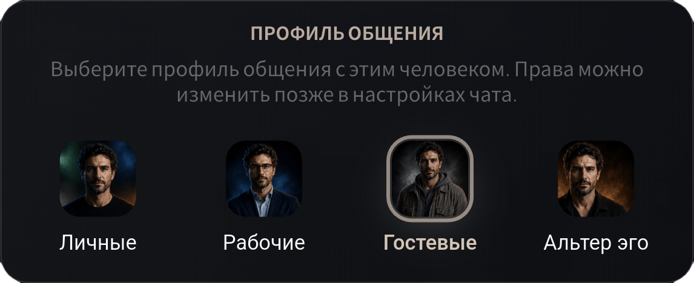

Я ОСТАЮСЬ
СОБОЙ
Один аккаунт. Один PAGER ID.
Новая модель приватного общения
Я остаюсь собой, но открываюсь по-разному.
Идентичность без номера
Один PAGER ID становится вашей публичной точкой контакта — для поиска, общения и профилей.

Человеку достаточно знать ваш PAGER ID, чтобы найти вас в приложении. Личный номер телефона при этом не раскрывается и не становится постоянным каналом связи.
В отличие от обычного ника, PAGER ID связан с профилями общения, настройками открытости и сроком контакта.
Условия общения
Вы выбираете профиль для каждого нового контакта: Личное, Работа, Гость или Альтер эго.
Профиль определяет, какие способы связи доступны человеку и сколько действует контакт.
Близким можно открыть текст, аудио и видео. Коллегам — текст и аудио. Временному контакту — только текст на 24 часа.
Для близкого круга
Для профессионального общения
Для временных контактов
Для отдельного круга


Один контакт —
один понятный набор возможностей.
Контексты идентичности
Близкие, коллеги и временные контакты не должны видеть один и тот же профиль.
В обычном мессенджере разные части жизни сходятся в одной точке: одно имя, одна фотография, одно описание — для всех.
PAGER позволяет создать отдельное представление себя для каждого контекста общения. У профиля могут быть свои имя, фотография, описание, аудитория и степень открытости.


Один аккаунт. Один PAGER ID.
Для близких, для работы, для временных контактов и для отдельного круга.
Имя, фотография, описание, аудитория и видимость настраиваются отдельно.
Для каждого контакта — своя дистанция, видимость и уровень доступа.
Это помогает избежать коллапса контекста — ситуации, когда личные, рабочие и случайные контакты оказываются внутри одного публичного образа.
Профиль общения определяет,
что человеку доступно.
Мультипрофиль определяет,
каким он видит вас.
Временное общение
Многие коммуникации нужны на несколько часов или дней — но обычные мессенджеры оставляют канал открытым постоянно.
Курьер, арендодатель, покупатель по объявлению, мастер или служба поддержки должны иметь возможность связаться с вами. Но это не означает, что контакт должен сохраняться навсегда.
Гостевой профиль открывает только необходимые способы общения и автоматически завершает связь после установленного срока.
Базовый срок гостевого контакта.
Доставка · Аренда · Объявления · Поддержка · Разовые услуги
Уже работает
PAGER работает как полноценный мессенджер: от личных и групповых чатов до мультипрофиля, временного доступа и управления условиями общения.
Стабильная private beta с завершённым
пользовательским опытом и проверкой
ключевых сценариев на первых когортах.
Монетизация
Сначала — платные возможности для пользователей и профессионалов. После проверки основных сценариев — B2B-инструменты и API.
Короткие и запоминающиеся идентификаторы.
Расширенное представление для фрилансеров, специалистов и публичных пользователей.
Дополнительные профили, возможности идентичности и приватности.
Единая точка контакта для компаний и сервисов.
Управляемое общение с клиентами без раскрытия личных номеров сотрудников.
Интеграции с доставкой, арендой, поддержкой и другими сервисами.
Сначала пользовательская ценность и B2C-монетизация → затем корпоративная инфраструктура.
Roadmap
Каждый этап завершается измеримым продуктовым результатом, а не только выпуском новых функций.
Профили общения, мультипрофиль, запросы и временные контакты.
Закрытое тестирование основных пользовательских сценариев.
Проверка удержания, сценариев временного общения и использования профилей.
Подготовка к публичному распространению приложения.
Аудио, видео, звонки, бизнес-доступ и API.
Ранний раунд
Раунд позволит завершить ключевые механики, стабилизировать приложение и проверить PAGER на первых пользовательских когортах.
Работающая private beta с подтверждённым
использованием ключевых механик PAGER.
PAGER создаётся основателем с опытом в предпринимательстве,
цифровых продуктах и сценарных механиках.
Проект развивается не как абстрактная идея, а как работающий MVP с определённой продуктовой системой и планом выхода в beta.